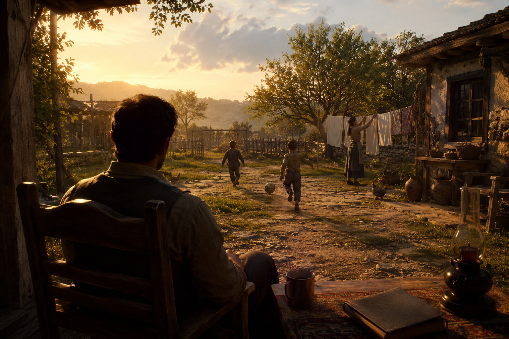
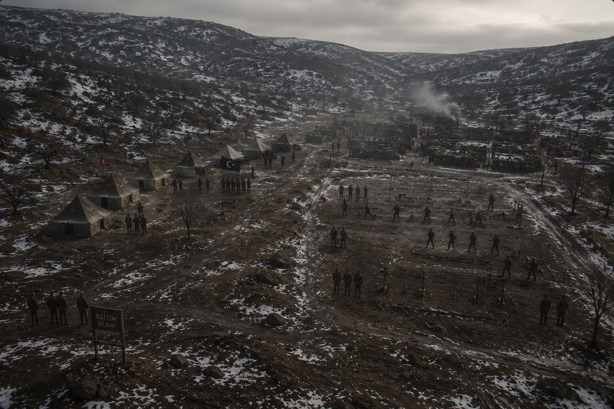
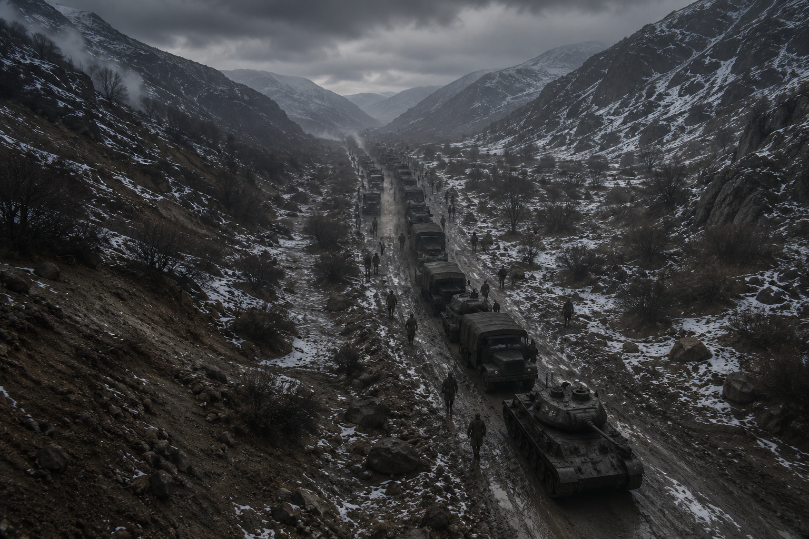
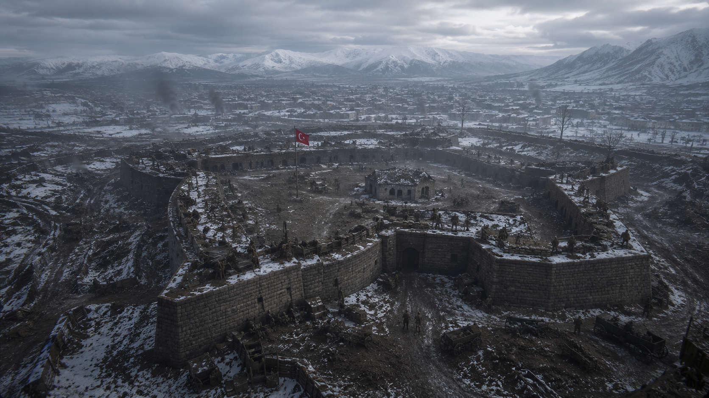

A village home in 1920s Erzurum. Murat lives peacefully with his wife and children — the war is still far away.

Time rewinds. Murat's military training and his first meeting with Hüseyin — the foundations of their comradeship are laid here.

"Can we get this running?" Murat and Hüseyin tear apart the enemy's logistics lines with a captured tank.

Written around Hüseyin's sacrifice, this story is in development in Unreal Engine 5 as Erzurum: The Last Front. A single-player narrative experience of 6–8 hours.
BACK TO PROJECTS →